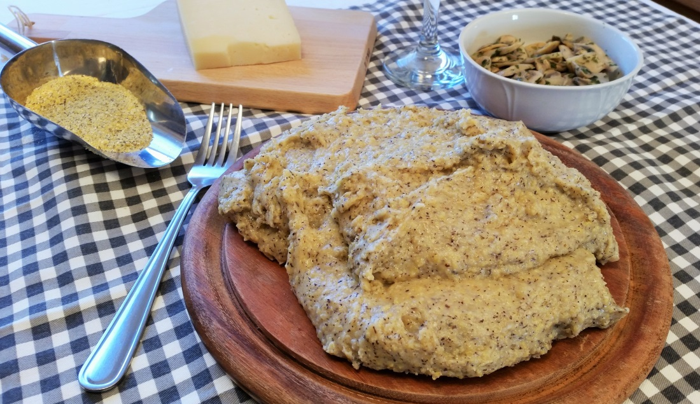

Polenta Taragna

Polenta taragna is a traditional dish from Northern Italy (Valtellina and
Lombardy). It’s a rustic, hearty polenta made with a mix of cornmeal and
buckwheat flour, enriched at the end with butter and local melting
cheeses, giving it a rich, creamy, and slightly nutty flavor.
Ingredients
- 250 g buckwheat flour
- 250 g cornmeal (polenta flour)
- 200 g butter
- 250 g soft, melting cheeses (e.g. Bitto, Casera, Taleggio)
- Coarse salt to taste
Directions
- Bring the salted water to a boil in a large pot.
-
Gradually pour in the mixed flours while stirring constantly with a
wooden spoon to prevent lumps.
- Cook over medium-low heat for 40–50 minutes, stirring often.
-
When cooked, stir in the butter and diced cheeses until the polenta
becomes smooth, creamy, and stringy.
- Serve hot.
Home